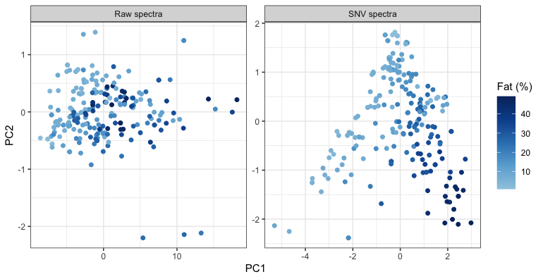
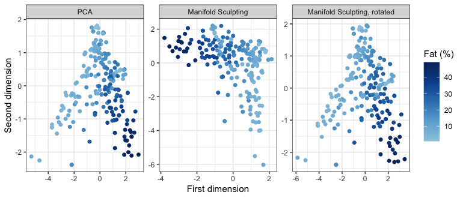
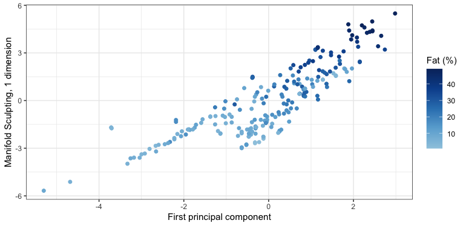
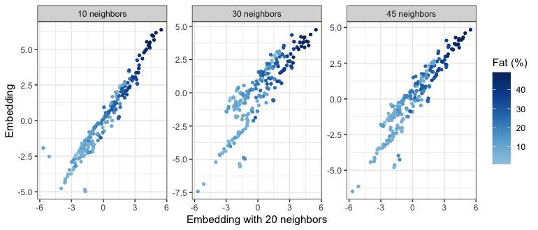
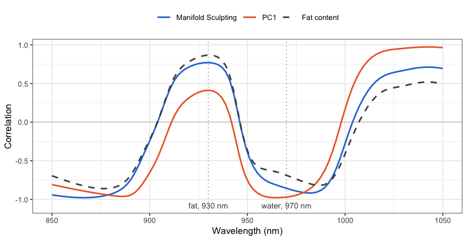
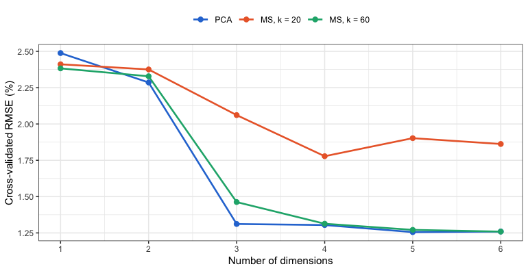

Horseshoe effect: Unfolding the arch in NIR spectra of meat
Source:vignettes/spectroscopy.Rmd
spectroscopy.RmdThe principal component scores of near-infrared (NIR) spectra often lie on an arch (i.e., horseshoe effect) rather than in a cloud: the spectra respond nonlinearly to the composition of the samples, and principal component analysis (PCA), which is linear, bends the main gradient of composition over two components. Manifold Sculpting is a tool to explore such structures. This vignette uses it on the NIR spectra of meat to ask what the arch is, whether it is a genuine curve of the spectra, and what coordinate runs along it.
The results were computed once, with the code shown here, because some of the computations take several minutes (see Reproducibility).
library(manifoldsculpting) # also attaches recipes
library(dplyr)
library(tidyr)
library(ggplot2)
library(rsample)
library(parsnip)
library(workflows)
library(tune)
library(yardstick)
theme_set(theme_bw(base_size = 10))
blues <- c("#9ecae1", "#6baed6", "#3182bd", "#08519c", "#08306b")
fat_colours <- scale_colour_gradientn(colours = blues, name = "Fat (%)")The data
The meats data of the modeldata package are the Tecator
data set (Borggaard and Thodberg, 1992): 215 samples of finely chopped
meat, with their absorbance spectra measured by transmission at 100
wavelengths from 850 to 1050 nm, and their water, fat and protein
contents (%).
data(meats, package = "modeldata")
glimpse(meats)
#> Rows: 215
#> Columns: 103
#> $ x_001 <dbl> 2.61776, 2.83454, 2.58284, 2.82286, 2.78813, 3.00993, 2.98893,…
#> $ x_002 <dbl> 2.61814, 2.83871, 2.58458, 2.82460, 2.78989, 3.01540, 2.99435,…
#> $ x_003 <dbl> 2.61859, 2.84283, 2.58629, 2.82630, 2.79167, 3.02086, 2.99980,…
#> $ x_004 <dbl> 2.61912, 2.84705, 2.58808, 2.82814, 2.79350, 3.02634, 3.00540,…
#> $ x_005 <dbl> 2.61981, 2.85138, 2.58996, 2.83001, 2.79538, 3.03190, 3.01117,…
#> $ x_006 <dbl> 2.62071, 2.85587, 2.59192, 2.83192, 2.79746, 3.03756, 3.01716,…
#> $ x_007 <dbl> 2.62186, 2.86060, 2.59401, 2.83392, 2.79984, 3.04341, 3.02347,…
#> $ x_008 <dbl> 2.62334, 2.86566, 2.59627, 2.83606, 2.80254, 3.04955, 3.03014,…
#> $ x_009 <dbl> 2.62511, 2.87093, 2.59873, 2.83842, 2.80553, 3.05599, 3.03708,…
#> $ x_010 <dbl> 2.62722, 2.87661, 2.60131, 2.84097, 2.80890, 3.06274, 3.04445,…
#> $ x_011 <dbl> 2.62964, 2.88264, 2.60414, 2.84374, 2.81272, 3.06982, 3.05213,…
#> $ x_012 <dbl> 2.63245, 2.88898, 2.60714, 2.84664, 2.81704, 3.07724, 3.06032,…
#> $ x_013 <dbl> 2.63565, 2.89577, 2.61029, 2.84975, 2.82184, 3.08511, 3.06905,…
#> $ x_014 <dbl> 2.63933, 2.90308, 2.61361, 2.85307, 2.82710, 3.09343, 3.07841,…
#> $ x_015 <dbl> 2.64353, 2.91097, 2.61714, 2.85661, 2.83294, 3.10231, 3.08846,…
#> $ x_016 <dbl> 2.64825, 2.91953, 2.62089, 2.86038, 2.83945, 3.11185, 3.09918,…
#> $ x_017 <dbl> 2.65350, 2.92873, 2.62486, 2.86437, 2.84664, 3.12205, 3.11059,…
#> $ x_018 <dbl> 2.65937, 2.93863, 2.62909, 2.86860, 2.85458, 3.13294, 3.12265,…
#> $ x_019 <dbl> 2.66585, 2.94929, 2.63361, 2.87308, 2.86331, 3.14457, 3.13566,…
#> $ x_020 <dbl> 2.67281, 2.96072, 2.63835, 2.87789, 2.87280, 3.15703, 3.14936,…
#> $ x_021 <dbl> 2.68008, 2.97272, 2.64330, 2.88301, 2.88291, 3.17038, 3.16331,…
#> $ x_022 <dbl> 2.68733, 2.98493, 2.64838, 2.88832, 2.89335, 3.18429, 3.17695,…
#> $ x_023 <dbl> 2.69427, 2.99690, 2.65354, 2.89374, 2.90374, 3.19840, 3.19001,…
#> $ x_024 <dbl> 2.70073, 3.00833, 2.65870, 2.89917, 2.91371, 3.21225, 3.20256,…
#> $ x_025 <dbl> 2.70684, 3.01920, 2.66375, 2.90457, 2.92305, 3.22552, 3.21496,…
#> $ x_026 <dbl> 2.71281, 3.02990, 2.66880, 2.90991, 2.93187, 3.23827, 3.22788,…
#> $ x_027 <dbl> 2.71914, 3.04101, 2.67383, 2.91521, 2.94060, 3.25084, 3.24197,…
#> $ x_028 <dbl> 2.72628, 3.05345, 2.67892, 2.92043, 2.94986, 3.26393, 3.25812,…
#> $ x_029 <dbl> 2.73462, 3.06777, 2.68411, 2.92565, 2.96035, 3.27851, 3.27652,…
#> $ x_030 <dbl> 2.74416, 3.08416, 2.68937, 2.93082, 2.97241, 3.29514, 3.29661,…
#> $ x_031 <dbl> 2.75466, 3.10221, 2.69470, 2.93604, 2.98606, 3.31401, 3.31746,…
#> $ x_032 <dbl> 2.76568, 3.12106, 2.70012, 2.94128, 3.00097, 3.33458, 3.33822,…
#> $ x_033 <dbl> 2.77679, 3.13983, 2.70563, 2.94658, 3.01652, 3.35591, 3.35857,…
#> $ x_034 <dbl> 2.78790, 3.15810, 2.71141, 2.95202, 3.03220, 3.37709, 3.37882,…
#> $ x_035 <dbl> 2.79949, 3.17623, 2.71775, 2.95777, 3.04793, 3.39772, 3.39971,…
#> $ x_036 <dbl> 2.81225, 3.19519, 2.72490, 2.96419, 3.06413, 3.41828, 3.42189,…
#> $ x_037 <dbl> 2.82706, 3.21584, 2.73344, 2.97159, 3.08153, 3.43974, 3.44511,…
#> $ x_038 <dbl> 2.84356, 3.23747, 2.74327, 2.98045, 3.10078, 3.46266, 3.46814,…
#> $ x_039 <dbl> 2.86106, 3.25889, 2.75433, 2.99090, 3.12185, 3.48663, 3.48887,…
#> $ x_040 <dbl> 2.87857, 3.27835, 2.76642, 3.00284, 3.14371, 3.51002, 3.50519,…
#> $ x_041 <dbl> 2.89497, 3.29384, 2.77931, 3.01611, 3.16510, 3.53087, 3.51543,…
#> $ x_042 <dbl> 2.90924, 3.30362, 2.79272, 3.03048, 3.18470, 3.54711, 3.51885,…
#> $ x_043 <dbl> 2.92085, 3.30681, 2.80649, 3.04579, 3.20140, 3.55699, 3.51619,…
#> $ x_044 <dbl> 2.93015, 3.30393, 2.82064, 3.06194, 3.21477, 3.55986, 3.50972,…
#> $ x_045 <dbl> 2.93846, 3.29700, 2.83541, 3.07889, 3.22544, 3.55656, 3.50259,…
#> $ x_046 <dbl> 2.94771, 3.28925, 2.85121, 3.09686, 3.23505, 3.54937, 3.49802,…
#> $ x_047 <dbl> 2.96019, 3.28409, 2.86872, 3.11629, 3.24586, 3.54169, 3.49875,…
#> $ x_048 <dbl> 2.97831, 3.28505, 2.88905, 3.13775, 3.26027, 3.53692, 3.50653,…
#> $ x_049 <dbl> 3.00306, 3.29326, 2.91289, 3.16217, 3.28063, 3.53823, 3.52275,…
#> $ x_050 <dbl> 3.03506, 3.30923, 2.94088, 3.19068, 3.30889, 3.54760, 3.54677,…
#> $ x_051 <dbl> 3.07428, 3.33267, 2.97325, 3.22376, 3.34543, 3.56512, 3.57737,…
#> $ x_052 <dbl> 3.11963, 3.36251, 3.00946, 3.26172, 3.39019, 3.59043, 3.61244,…
#> $ x_053 <dbl> 3.16868, 3.39661, 3.04780, 3.30379, 3.44198, 3.62229, 3.64869,…
#> $ x_054 <dbl> 3.21771, 3.43188, 3.08554, 3.34793, 3.49800, 3.65830, 3.68262,…
#> $ x_055 <dbl> 3.26254, 3.46492, 3.11947, 3.39093, 3.55407, 3.69515, 3.71139,…
#> $ x_056 <dbl> 3.29988, 3.49295, 3.14696, 3.42920, 3.60534, 3.72932, 3.73360,…
#> $ x_057 <dbl> 3.32847, 3.51458, 3.16677, 3.45998, 3.64789, 3.75803, 3.74947,…
#> $ x_058 <dbl> 3.34899, 3.53004, 3.17938, 3.48227, 3.68011, 3.78003, 3.76022,…
#> $ x_059 <dbl> 3.36342, 3.54067, 3.18631, 3.49687, 3.70272, 3.79560, 3.76731,…
#> $ x_060 <dbl> 3.37379, 3.54797, 3.18924, 3.50558, 3.71815, 3.80614, 3.77206,…
#> $ x_061 <dbl> 3.38152, 3.55306, 3.18950, 3.51026, 3.72863, 3.81313, 3.77511,…
#> $ x_062 <dbl> 3.38741, 3.55675, 3.18801, 3.51221, 3.73574, 3.81774, 3.77666,…
#> $ x_063 <dbl> 3.39164, 3.55921, 3.18498, 3.51215, 3.74059, 3.82079, 3.77696,…
#> $ x_064 <dbl> 3.39418, 3.56045, 3.18039, 3.51036, 3.74357, 3.82258, 3.77594,…
#> $ x_065 <dbl> 3.39490, 3.56034, 3.17411, 3.50682, 3.74453, 3.82301, 3.77346,…
#> $ x_066 <dbl> 3.39366, 3.55876, 3.16611, 3.50140, 3.74336, 3.82206, 3.76953,…
#> $ x_067 <dbl> 3.39045, 3.55571, 3.15641, 3.49398, 3.73991, 3.81959, 3.76426,…
#> $ x_068 <dbl> 3.38541, 3.55132, 3.14512, 3.48457, 3.73418, 3.81557, 3.75787,…
#> $ x_069 <dbl> 3.37869, 3.54585, 3.13241, 3.47333, 3.72638, 3.81021, 3.75055,…
#> $ x_070 <dbl> 3.37041, 3.53950, 3.11843, 3.46041, 3.71676, 3.80375, 3.74243,…
#> $ x_071 <dbl> 3.36073, 3.53235, 3.10329, 3.44595, 3.70553, 3.79642, 3.73368,…
#> $ x_072 <dbl> 3.34979, 3.52442, 3.08714, 3.43005, 3.69289, 3.78835, 3.72442,…
#> $ x_073 <dbl> 3.33769, 3.51583, 3.07014, 3.41285, 3.67900, 3.77958, 3.71475,…
#> $ x_074 <dbl> 3.32443, 3.50668, 3.05237, 3.39450, 3.66396, 3.77024, 3.70463,…
#> $ x_075 <dbl> 3.31013, 3.49700, 3.03393, 3.37511, 3.64785, 3.76040, 3.69406,…
#> $ x_076 <dbl> 3.29487, 3.48683, 3.01504, 3.35482, 3.63085, 3.75005, 3.68318,…
#> $ x_077 <dbl> 3.27891, 3.47626, 2.99569, 3.33376, 3.61305, 3.73929, 3.67229,…
#> $ x_078 <dbl> 3.26232, 3.46552, 2.97612, 3.31204, 3.59463, 3.72831, 3.66175,…
#> $ x_079 <dbl> 3.24542, 3.45501, 2.95642, 3.28986, 3.57582, 3.71738, 3.65160,…
#> $ x_080 <dbl> 3.22828, 3.44481, 2.93660, 3.26730, 3.55695, 3.70681, 3.64173,…
#> $ x_081 <dbl> 3.21080, 3.43477, 2.91667, 3.24442, 3.53796, 3.69664, 3.63191,…
#> $ x_082 <dbl> 3.19287, 3.42465, 2.89655, 3.22117, 3.51880, 3.68659, 3.62177,…
#> $ x_083 <dbl> 3.17433, 3.41419, 2.87622, 3.19757, 3.49936, 3.67649, 3.61102,…
#> $ x_084 <dbl> 3.15503, 3.40303, 2.85563, 3.17357, 3.47938, 3.66611, 3.59929,…
#> $ x_085 <dbl> 3.13475, 3.39082, 2.83474, 3.14915, 3.45869, 3.65503, 3.58642,…
#> $ x_086 <dbl> 3.11339, 3.37731, 2.81361, 3.12429, 3.43711, 3.64283, 3.57249,…
#> $ x_087 <dbl> 3.09116, 3.36265, 2.79235, 3.09908, 3.41458, 3.62938, 3.55803,…
#> $ x_088 <dbl> 3.06850, 3.34745, 2.77113, 3.07366, 3.39129, 3.61483, 3.54375,…
#> $ x_089 <dbl> 3.04596, 3.33245, 2.75015, 3.04825, 3.36772, 3.59990, 3.53017,…
#> $ x_090 <dbl> 3.02393, 3.31818, 2.72956, 3.02308, 3.34450, 3.58535, 3.51747,…
#> $ x_091 <dbl> 3.00247, 3.30473, 2.70934, 2.99820, 3.32201, 3.57163, 3.50544,…
#> $ x_092 <dbl> 2.98145, 3.29186, 2.68951, 2.97367, 3.30025, 3.55877, 3.49372,…
#> $ x_093 <dbl> 2.96072, 3.27921, 2.67009, 2.94951, 3.27907, 3.54651, 3.48197,…
#> $ x_094 <dbl> 2.94013, 3.26655, 2.65112, 2.92576, 3.25831, 3.53442, 3.46996,…
#> $ x_095 <dbl> 2.91978, 3.25369, 2.63262, 2.90251, 3.23784, 3.52221, 3.45756,…
#> $ x_096 <dbl> 2.89966, 3.24045, 2.61461, 2.87988, 3.21765, 3.50972, 3.44456,…
#> $ x_097 <dbl> 2.87964, 3.22659, 2.59718, 2.85794, 3.19766, 3.49682, 3.43070,…
#> $ x_098 <dbl> 2.85960, 3.21181, 2.58034, 2.83672, 3.17770, 3.48325, 3.41583,…
#> $ x_099 <dbl> 2.83940, 3.19600, 2.56404, 2.81617, 3.15770, 3.46870, 3.40018,…
#> $ x_100 <dbl> 2.81920, 3.17942, 2.54816, 2.79622, 3.13753, 3.45307, 3.38415,…
#> $ water <dbl> 60.50, 46.00, 71.00, 72.80, 58.30, 44.00, 44.00, 69.30, 61.40,…
#> $ fat <dbl> 22.5, 40.1, 8.4, 5.9, 25.5, 42.7, 42.7, 10.6, 19.9, 19.9, 46.0…
#> $ protein <dbl> 16.7, 13.5, 20.5, 20.7, 15.5, 13.7, 13.7, 19.3, 17.7, 17.7, 12…In long format, with one row per sample and wavelength, the spectra are easy to transform and to plot:
wavelengths <- seq(850, 1050, length.out = 100)
spectra <- meats |>
mutate(sample = row_number()) |>
pivot_longer(
starts_with("x_"),
names_to = "channel",
values_to = "absorbance"
) |>
mutate(wavelength = wavelengths[as.integer(sub("x_", "", channel))])
spectra
#> # A tibble: 21,500 × 7
#> water fat protein sample channel absorbance wavelength
#> <dbl> <dbl> <dbl> <int> <chr> <dbl> <dbl>
#> 1 60.5 22.5 16.7 1 x_001 2.62 850
#> 2 60.5 22.5 16.7 1 x_002 2.62 852.
#> 3 60.5 22.5 16.7 1 x_003 2.62 854.
#> 4 60.5 22.5 16.7 1 x_004 2.62 856.
#> 5 60.5 22.5 16.7 1 x_005 2.62 858.
#> 6 60.5 22.5 16.7 1 x_006 2.62 860.
#> 7 60.5 22.5 16.7 1 x_007 2.62 862.
#> 8 60.5 22.5 16.7 1 x_008 2.62 864.
#> 9 60.5 22.5 16.7 1 x_009 2.63 866.
#> 10 60.5 22.5 16.7 1 x_010 2.63 868.
#> # ℹ 21,490 more rows
ggplot(spectra) +
aes(wavelength, absorbance, group = sample, colour = fat) +
geom_line(linewidth = 0.3) +
fat_colours +
labs(x = "Wavelength (nm)", y = "Absorbance")
The spectra differ mostly by vertical offsets, caused by light scattering in samples of different texture, which have little to do with their composition. The composition itself has only two degrees of freedom, since water, fat and protein add up to about 99%. Fat varies the most, from 1% to 49%, and water and protein decrease as it increases (correlations of -0.99 and -0.86).
ggplot(meats) +
aes(fat, protein) +
geom_point(size = 1.5, colour = last(blues), alpha = 0.7) +
labs(x = "Fat (%)", y = "Protein (%)")
Scatter correction
The standard normal variate (SNV) transformation (Barnes et al., 1989) removes most of the scatter: each spectrum is centered and scaled by its own mean and standard deviation.
spectra <- spectra |>
group_by(sample) |>
mutate(snv = (absorbance - mean(absorbance)) / sd(absorbance)) |>
ungroup()
meats_snv <- spectra |>
select(sample, water, fat, protein, channel, snv) |>
pivot_wider(names_from = channel, values_from = snv) |>
select(-sample)
ggplot(spectra) +
aes(wavelength, snv, group = sample, colour = fat) +
geom_line(linewidth = 0.3) +
fat_colours +
labs(x = "Wavelength (nm)", y = "SNV absorbance")
The arch
The recipes share a first step: protein is the outcome, water and fat are kept for the plots but are not predictors, and the spectra are centered.
base_recipe <- function(data) {
recipe(protein ~ ., data = data) |>
update_role(water, fat, new_role = "composition") |>
step_center(all_predictors())
}
pca_raw <- base_recipe(meats) |>
step_pca(all_predictors(), num_comp = 2) |>
prep()
pca_snv <- base_recipe(meats_snv) |>
step_pca(all_predictors(), num_comp = 2) |>
prep()
# Percentage of variance of the first three components
variance <- bind_rows(
raw = tidy(pca_raw, number = 2, type = "variance"),
SNV = tidy(pca_snv, number = 2, type = "variance"),
.id = "spectra"
) |>
filter(terms == "percent variance", component <= 3) |>
pivot_wider(names_from = component, names_prefix = "PC", values_from = value) |>
select(spectra, PC1, PC2, PC3)
variance
#> # A tibble: 2 × 4
#> spectra PC1 PC2 PC3
#> <chr> <dbl> <dbl> <dbl>
#> 1 raw 98.7 0.901 0.296
#> 2 SNV 68.1 29.1 1.63
pca_scores <- bind_rows(
"Raw spectra" = bake(pca_raw, new_data = NULL),
"SNV spectra" = bake(pca_snv, new_data = NULL),
.id = "spectra"
)
ggplot(pca_scores, aes(PC1, PC2, colour = fat)) +
geom_point(size = 1.5) +
facet_wrap(~spectra, scales = "free") +
fat_colours
On the raw spectra, the first component is the scatter, with 98.7% of the variance, and the fat contents are mixed up. After the SNV transformation, the first two components carry 68% and 29% of the variance, and the scores lie on an arch. Fat runs along it, from the leanest samples at the end of the left arm, over the top, to the fattest at the end of the right arm. The fat content of a sample is given by its position along the arch, and neither component follows it on its own: this is the horseshoe effect of ordination methods (Diaconis et al., 2008), where one dominant nonlinear gradient is bent over two components.
Two dimensions keep the arch
step_manifold_sculpting() replaces
step_pca() in the same recipe. It looks for coordinates
that preserve the distances and angles between neighboring spectra (20
neighbors here), with the best of three runs:
ms_snv <- base_recipe(meats_snv) |>
step_manifold_sculpting(
all_predictors(),
num_comp = 2,
neighbors = 20,
options = list(nstart = 3),
seed = 1
) |>
prep()
pca_snv_scores <- bake(pca_snv, new_data = NULL)
ms_scores <- bake(ms_snv, new_data = NULL)
ms_scores |> select(MS1, MS2, water, fat, protein)
#> # A tibble: 215 × 5
#> MS1 MS2 water fat protein
#> <dbl> <dbl> <dbl> <dbl> <dbl>
#> 1 0.364 0.904 60.5 22.5 16.7
#> 2 -2.40 1.15 46 40.1 13.5
#> 3 0.959 -3.04 71 8.4 20.5
#> 4 1.44 -2.07 72.8 5.9 20.7
#> 5 -0.317 1.48 58.3 25.5 15.5
#> 6 -2.66 1.72 44 42.7 13.7
#> 7 -2.96 0.813 44 42.7 13.7
#> 8 1.02 0.650 69.3 10.6 19.3
#> 9 -0.705 1.13 61.4 19.9 17.7
#> 10 -0.764 0.490 61.4 19.9 17.7
#> # ℹ 205 more rows
# Rotate (and reflect) a configuration onto a target, by Procrustes analysis
procrustes <- function(x, target) {
x <- scale(x, scale = FALSE)
s <- svd(crossprod(x, scale(target, scale = FALSE)))
x %*% s$u %*% t(s$v)
}
rotated <- procrustes(
as.matrix(select(ms_scores, MS1, MS2)),
as.matrix(select(pca_snv_scores, PC1, PC2))
)
method_levels <- c("PCA", "Manifold Sculpting", "Manifold Sculpting, rotated")
bind_rows(
"PCA" = pca_snv_scores |> rename(dim_1 = PC1, dim_2 = PC2),
"Manifold Sculpting" = ms_scores |> rename(dim_1 = MS1, dim_2 = MS2),
"Manifold Sculpting, rotated" = ms_scores |> mutate(dim_1 = rotated[, 1], dim_2 = rotated[, 2]),
.id = "method"
) |>
mutate(method = factor(method, levels = method_levels)) |>
ggplot(aes(dim_1, dim_2, colour = fat)) +
geom_point(size = 1.5) +
facet_wrap(~method, scales = "free") +
fat_colours +
labs(x = "First dimension", y = "Second dimension")
The embedding looks different from the PCA scores, but the orientation and the scale of the axes of an embedding are arbitrary, and only its shape matters. Rotated onto the PCA scores (right), it is the same arch: each dimension of the embedding is almost exactly a linear combination of the first two principal components.
# Share of each dimension of the embedding explained by PC1 and PC2
two_d <- bind_cols(ms_scores |> select(MS1, MS2), pca_snv_scores |> select(PC1, PC2))
two_d_r2 <- c(
MS1 = summary(lm(MS1 ~ PC1 + PC2, data = two_d))$r.squared,
MS2 = summary(lm(MS2 ~ PC1 + PC2, data = two_d))$r.squared
)
round(two_d_r2, 3)
#> MS1 MS2
#> 0.993 0.996This is how Manifold Sculpting should behave. It preserves the geometry of neighborhoods, and an arch that lies in a plane already has room to keep it in two dimensions: straightening the arch would stretch its outer edge and compress its inner one. The method unfolds a structure only when the number of dimensions forces it to, as for the Swiss roll, a sheet rolled up in three dimensions that is laid flat in two. The agreement with PCA is thus a finding in itself: the arch is a genuine curve of the spectra, lying in the plane of the first two components (which carry 97% of the variance), and not the shadow of a structure folded in more dimensions, which a projection would hide.
One dimension unfolds it
The arch is a single gradient bent in two dimensions, and with one
dimension, Manifold Sculpting has to unfold it. The
manifold_sculpting() function computes the embedding
directly from the matrix of SNV spectra:
snv <- as.matrix(select(meats_snv, starts_with("x_")))
# The sign of an embedding is arbitrary: orient it so that it increases with fat
along_fat <- function(x) x * sign(cor(x, meats_snv$fat))
set.seed(1)
ms_1d <- manifold_sculpting(snv, ndim = 1, neighbors = 20, nstart = 3)
ms_1d
#> Manifold Sculpting embedding
#> * 215 samples, 100 variables to 1 dimension
#> * 20 neighbors, squishing rate 0.99
#> * 549 iterations (converged), final error 1357
#> * Best of 3 runs, with final errors 1357, 1475, 1571
coordinates <- pca_snv_scores |>
select(PC1, PC2, water, fat, protein) |>
mutate(MS = along_fat(ms_1d$embedding[, 1]), PC1_fat = along_fat(PC1))
ggplot(coordinates) +
aes(PC1_fat, MS, colour = fat) +
geom_point(size = 1.5) +
fat_colours +
labs(x = "First principal component", y = "Manifold Sculpting, 1 dimension")
The two coordinates agree at the lean end of the arch, but not where it turns. The first principal component projects the samples across the arch, so that samples at its top and on its steep right arm can have the same score. The embedding follows the arch, and places the leaner samples of the top before the fatter samples of the arm, which sit above them in the plot. It is therefore closer to the gradient of composition:
first_dimension <- coordinates |>
pivot_longer(c(PC1_fat, MS), names_to = "method", values_to = "dimension") |>
mutate(method = factor(method, levels = c("PC1_fat", "MS"),
labels = c("PC1", "Manifold Sculpting, 1 dimension"))) |>
pivot_longer(c(water, fat, protein), names_to = "constituent", values_to = "percent") |>
mutate(constituent = factor(constituent, levels = c("water", "fat", "protein")))
# Share of the variance of each constituent explained by a straight line
linearity <- first_dimension |>
group_by(constituent, method) |>
summarise(r_squared = cor(dimension, percent)^2, .groups = "drop") |>
pivot_wider(names_from = method, values_from = r_squared)
linearity
#> # A tibble: 3 × 3
#> constituent PC1 `Manifold Sculpting, 1 dimension`
#> <fct> <dbl> <dbl>
#> 1 water 0.505 0.739
#> 2 fat 0.453 0.691
#> 3 protein 0.320 0.371
ggplot(first_dimension, aes(dimension, percent)) +
geom_point(size = 1, colour = last(blues), alpha = 0.6) +
geom_smooth(method = "lm", formula = y ~ x, se = FALSE, colour = "#eb6834", linewidth = 0.6) +
facet_grid(constituent ~ method, scales = "free") +
labs(x = NULL, y = "Content (%)")
A straight line on the one-dimensional embedding explains 74% of the variance of water and 69% of fat, against 51% and 45% for the first principal component, whose relation with the contents bends at the ends of the arch. Protein gains less (37% against 32%): it decreases as fat increases, but it is not a function of the fat and water gradient alone. No reference value was used to obtain this coordinate.
How stable is the coordinate?
An exploratory embedding is only useful if its features do not depend on the settings. The coordinate is computed again with 10 to 45 neighbors:
k_values <- c(10, 20, 30, 45)
stability <- lapply(k_values, function(k) {
set.seed(1)
fit <- manifold_sculpting(snv, ndim = 1, neighbors = k, nstart = 3)
tibble(
neighbors = k,
sample = seq_len(nrow(snv)),
MS = along_fat(fit$embedding[, 1])
)
}) |>
bind_rows() |>
left_join(
coordinates |> mutate(sample = row_number()),
by = "sample",
suffix = c("", "_20")
)
stability_summary <- stability |>
group_by(neighbors) |>
summarise(
rank_cor_k20 = cor(MS, MS_20, method = "spearman"),
r2_water = cor(MS, water)^2,
r2_fat = cor(MS, fat)^2,
r2_protein = cor(MS, protein)^2
)
stability_summary
#> # A tibble: 4 × 5
#> neighbors rank_cor_k20 r2_water r2_fat r2_protein
#> <dbl> <dbl> <dbl> <dbl> <dbl>
#> 1 10 0.969 0.738 0.686 0.400
#> 2 20 1 0.739 0.691 0.371
#> 3 30 0.875 0.525 0.469 0.322
#> 4 45 0.935 0.643 0.587 0.372
stability |>
filter(neighbors != 20) |>
mutate(neighbors = factor(neighbors, levels = k_values, labels = paste(k_values, "neighbors"))) |>
ggplot(aes(MS_20, MS, colour = fat)) +
geom_point(size = 1) +
facet_wrap(~neighbors, scales = "free_y") +
fat_colours +
labs(x = "Embedding with 20 neighbors", y = "Embedding")
The order of the samples is stable: whatever the number of neighbors, the coordinate ranks them nearly as with 20 neighbors (a rank correlation of at least 0.88). How evenly it spreads them varies more, as the bends in the plots show, and with it the share of the variance of water that a straight line explains, from 52% to 74% (against 51% for the first principal component). Trying a few numbers of neighbors, as here, tells which features of an embedding can be trusted.
What drives the coordinate
Manifold Sculpting has no loadings, but the correlation between the SNV absorbance at each wavelength and the coordinate shows which parts of the spectra it follows. The same correlations with the first principal component and with the fat content are shown for comparison:
profiles <- tibble(
wavelength = wavelengths,
"Manifold Sculpting" = cor(snv, coordinates$MS)[, 1],
"PC1" = cor(snv, coordinates$PC1_fat)[, 1],
"Fat content" = cor(snv, meats_snv$fat)[, 1]
)
# How closely the profile of each coordinate follows that of fat
profile_fit <- c(
"Manifold Sculpting" = cor(profiles[["Manifold Sculpting"]], profiles[["Fat content"]]),
"PC1" = cor(profiles$PC1, profiles[["Fat content"]])
)
round(profile_fit, 3)
#> Manifold Sculpting PC1
#> 0.986 0.850
peak <- profiles$wavelength[which.max(profiles[["Manifold Sculpting"]])]
profiles_long <- profiles |>
pivot_longer(-wavelength, names_to = "variable", values_to = "r") |>
mutate(variable = factor(variable, levels = c("Manifold Sculpting", "PC1", "Fat content")))
ggplot(profiles_long, aes(wavelength, r, colour = variable, linetype = variable)) +
geom_hline(yintercept = 0, colour = "grey80") +
geom_vline(xintercept = c(930, 970), colour = "grey60", linetype = "dotted") +
annotate("text", x = c(930, 970), y = -1.08, label = c("fat, 930 nm", "water, 970 nm"),
size = 3, colour = "grey30") +
geom_line(linewidth = 0.8) +
scale_colour_manual(values = c("#2a78d6", "#eb6834", "grey30")) +
scale_linetype_manual(values = c("solid", "solid", "dashed")) +
labs(x = "Wavelength (nm)", y = "Correlation", colour = NULL, linetype = NULL) +
theme(legend.position = "top")
The profile of the coordinate is almost that of the fat content (a correlation of 0.99 between the two profiles, against 0.85 for the first principal component), with its maximum at 929 nm, at the absorption band of fat near 930 nm (third overtone of the C–H stretching vibration). The coordinate is the gradient of fat against water, while the first principal component mixes it with the bending of the arch.
What unfolding does not do
The coordinate follows the main gradient of composition, without any reference value. Does unfolding also help to predict a minor constituent such as protein? Principal component regression and its Manifold Sculpting analog, a linear regression on 1 to 6 dimensions, are compared by 10-fold cross-validation, with 20 neighbors as above and with 60:
set.seed(2026)
folds <- vfold_cv(meats_snv, v = 10, strata = protein)
pca_wflow <- workflow(
base_recipe(meats_snv) |> step_pca(all_predictors(), num_comp = tune()),
linear_reg()
)
ms_wflow <- workflow(
base_recipe(meats_snv) |>
step_manifold_sculpting(
all_predictors(),
num_comp = tune(),
neighbors = tune(),
options = list(nstart = 3), seed = 1),
linear_reg()
)
pca_cv <- tune_grid(
pca_wflow,
resamples = folds,
grid = tibble(num_comp = 1:6), metrics = metric_set(rmse)
)
ms_cv <- tune_grid(
ms_wflow,
resamples = folds,
grid = crossing(num_comp = 1:6, neighbors = c(20, 60)), metrics = metric_set(rmse)
)
cv_results <- bind_rows(
collect_metrics(pca_cv) |> mutate(model = "PCA"),
collect_metrics(ms_cv) |> mutate(model = paste0("MS, k = ", neighbors))
) |>
mutate(model = factor(model, levels = c("PCA", "MS, k = 20", "MS, k = 60")))
cv_results |>
group_by(model) |>
slice_min(mean, n = 1) |>
select(model, num_comp, rmse = mean, std_err)
#> # A tibble: 3 × 4
#> # Groups: model [3]
#> model num_comp rmse std_err
#> <fct> <int> <dbl> <dbl>
#> 1 PCA 5 1.26 0.0793
#> 2 MS, k = 20 4 1.78 0.122
#> 3 MS, k = 60 6 1.26 0.0752
ggplot(cv_results, aes(num_comp, mean, colour = model)) +
geom_line(linewidth = 0.8) +
geom_point(size = 2) +
scale_colour_manual(values = c("#2a78d6", "#eb6834", "#1baf7a")) +
scale_x_continuous(breaks = 1:6) +
labs(x = "Number of dimensions", y = "Cross-validated RMSE (%)", colour = NULL) +
theme(legend.position = "top")
With the 20 neighbors that unfold the arch, the regression on the embedding is clearly worse than principal component regression (a cross-validated RMSE of 1.78 at best, against 1.26). With 60 neighbors, it is as accurate (1.26). Protein absorbs weakly between 850 and 1050 nm, where the bands of water and fat dominate, and much of its signal is in directions of small variance: the third principal component, with 1.6% of the variance, reduces the RMSE of principal component regression from 2.29 to 1.31. Manifold Sculpting, which preserves the geometry of neighborhoods, keeps such small variations only with large neighborhoods, where it behaves like a global method. For the calibration of a minor constituent, a linear model on enough components, such as principal component regression or partial least squares, is as accurate and simpler.
What we see
- The arch is the gradient of fat. Once the scatter is removed, the PCA scores lie on an arch, along which fat increases from one end to the other: one nonlinear gradient bent over two components.
- Two dimensions keep the arch. The two-dimensional embedding has the shape of the PCA scores: the arch is a genuine curve of the spectra, lying in a plane, which Manifold Sculpting has no reason to straighten.
- One dimension unfolds it. The one-dimensional embedding orders the samples along the arch, and its profile over the wavelengths is that of fat. With 20 neighbors, it follows water and fat much more closely than the first principal component; its order is stable across numbers of neighbors, but how much closer it is varies.
- Unfolding is not calibration. The embedding does not predict protein better than the principal components, and matches them only with large neighborhoods.
Manifold Sculpting is thus an exploratory tool for spectra: it tells whether a curved structure in a score plot is genuine, and gives a coordinate along it without reference values. The same approach applies whenever spectra follow one curved path, as in the monitoring of a process, a reaction or the ripening of a product over time, where such a coordinate can track progress before any reference analysis is available.
Reproducibility
The vignette was computed with the following versions:
| Package | Version |
|---|---|
| manifoldsculpting | 1.2.1 |
| modeldata | 1.6.0 |
| recipes | 1.4.0 |
| rsample | 1.3.2 |
| parsnip | 1.6.1 |
| workflows | 1.3.0 |
| tune | 2.1.0 |
| yardstick | 1.4.0 |
| dplyr | 1.2.1 |
| tidyr | 1.3.2 |
| ggplot2 | 4.0.3 |
To compute it again, install these packages and run
vignettes/precompute.R from the source of the package. It
knits vignettes/spectroscopy.Rmd.orig, which holds the
code, into vignettes/spectroscopy.Rmd.
References
Barnes, R. J., Dhanoa, M. S. and Lister, S. J. (1989). Standard normal variate transformation and de-trending of near-infrared diffuse reflectance spectra. Applied Spectroscopy, 43, 772–777.
Borggaard, C. and Thodberg, H. H. (1992). Optimal minimal neural interpretation of spectra. Analytical Chemistry, 64, 545–551.
Diaconis, P., Goel, S. and Holmes, S. (2008). Horseshoes in multidimensional scaling and local kernel methods. The Annals of Applied Statistics, 2, 777–807.
Gashler, M., Ventura, D. and Martinez, T. (2008). Iterative non-linear dimensionality reduction with manifold sculpting. In Advances in Neural Information Processing Systems 20, 513–520.